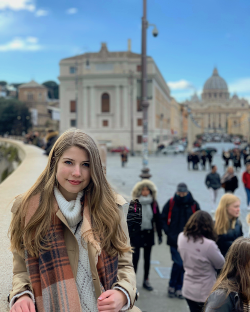
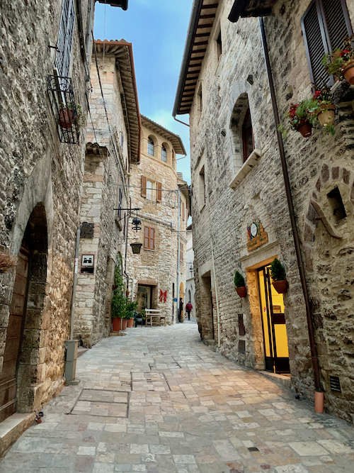
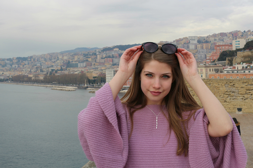
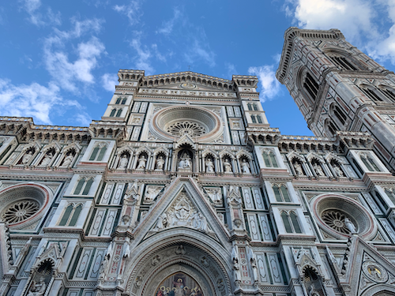
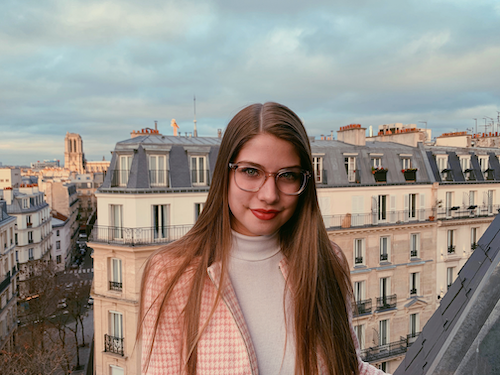
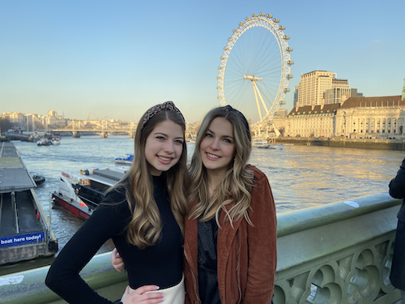
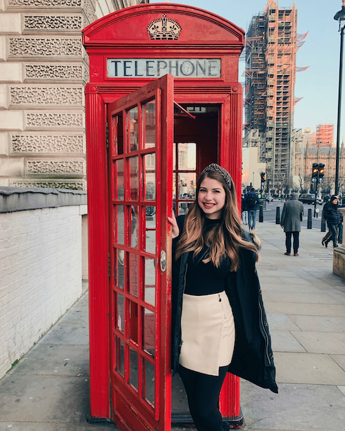

Study Abroad Trips
J-Term 2019 - Theology 101 in Rome, Italy
My freshman year at UST, I took Theo 101 in Rome during the January term. It was an amazing experience. I learned so much and made a lot of great friends along the way. We stayed at the UST Bernardi Campus which is located near the center of Rome and Vatican City. Outside of exploring Rome, we also took some weekend trips to Naples, Pompeii, Assisi, and Florence. My favorite place we went to was Assisi because it had such a unique feel compared to the other busy cities we visited.
The Colosseum in Rome, Italy.

The Vatican in Rome, Italy,

The beautiful streets of Assisi, Italy

Pciture of me in Naples, Italy overlooking the coast.

The Duomo in Florence, Italy.
J-Term 2020 - Modernist European Literature in Madrid, Paris, and London
During my sophomore year J-term, I participated in an English course centered around Modernist literature. We visited Madrid, Spain first, then Paris, France, and finally London, England. It was a fun and different experience from my first J-Term since we visited multiple countries during a short amount of time.
View of the Seine in Paris, France.

The view from outside my hotel in Paris, France

The London Eye in London, England.

Photo of me outside of a telephone booth by Big Ben in London, England.